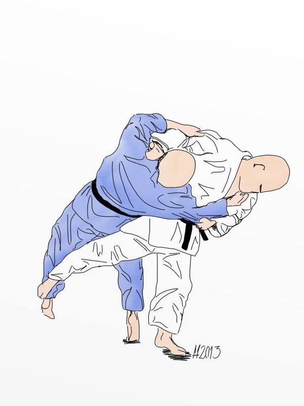
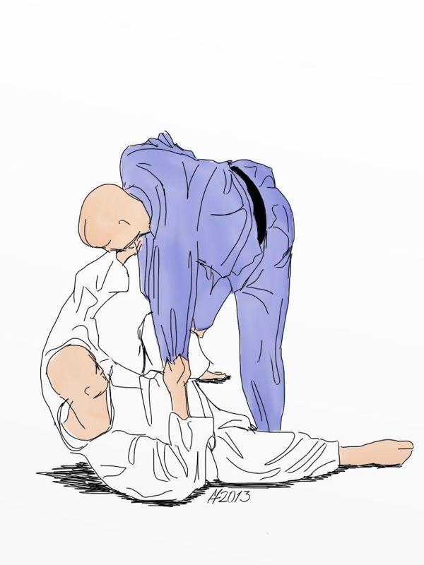
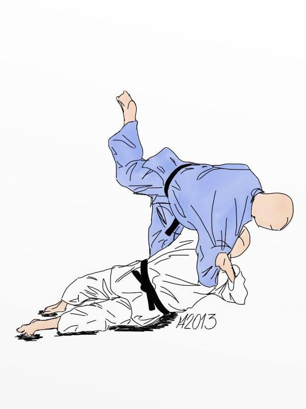
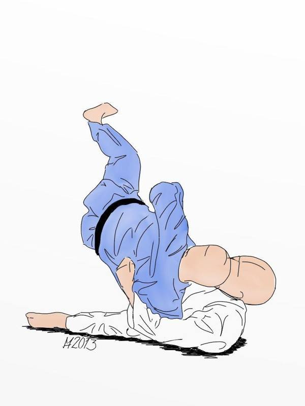
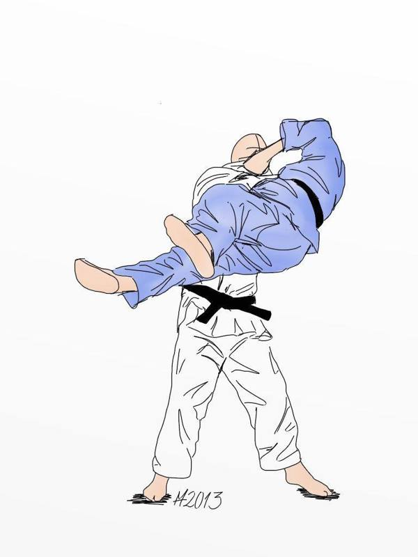
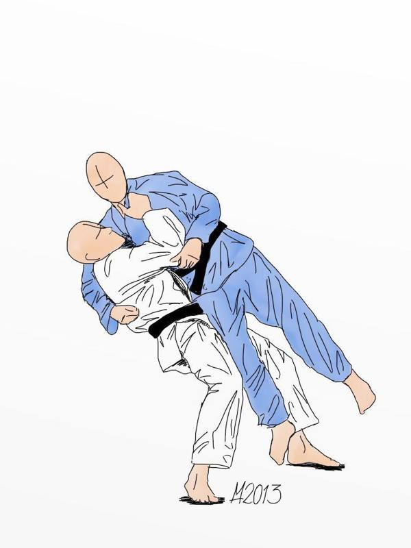
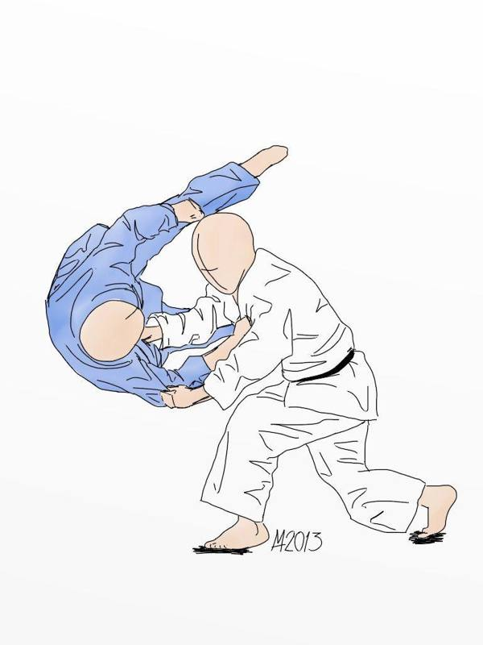
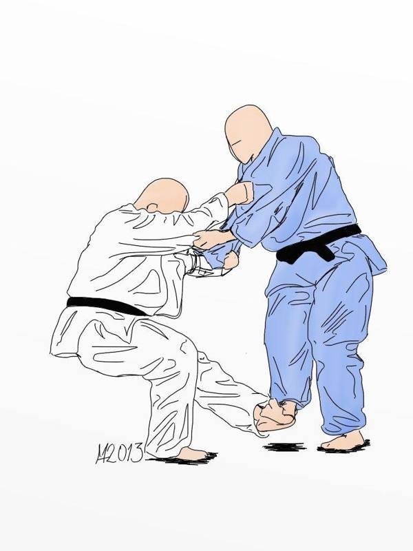

9. Gokyo Dai-gokyō — il quinto gruppo
Il Dai-gokyō (第五教, «quinto gruppo») è l'ultima tavola del Gokyo no waza (五教の技), istituito nel 1895 e revisionato nel 1920. Per il candidato al 4° dan è la parte veramente nuova dell'esame: i primi quattro gruppi si ripresentano come consolidamento — con renraku (連絡, combinazioni), gaeshi (返, controtiri) e difese — mentre il quinto è la richiesta specifica del gradino. La FIJLKAM vi annovera Sumi-otoshi (te-waza, 手技), Ushiro-goshi (koshi-waza, 腰技), O-soto-guruma (ashi-waza, 足技) e ben cinque sutemi-waza (捨技, di sacrificio): Uki-waza, Yoko-wakare, Yoko-guruma, Ura-nage, Yoko-gake.
Due avvertenze. Primo: molte tecniche del gruppo sono «di risposta»: Ushiro-goshi, Ura-nage e Yoko-guruma nascono come controtiri alle proiezioni di bacino e presuppongono di saper ricevere un attacco senza opporre forza cieca; la commissione valuterà proprio questo. Secondo: la tavola odierna è quella del 1920: nel Gokyo del 1895 O-soto-guruma, Yoko-wakare, Yoko-guruma e Yoko-gake erano già nel 5° gruppo, ma Ushiro-goshi e Ura-nage erano nel 3° e Uki-waza nel 4°; Sumi-otoshi è l'unica aggiunta del 1920.
9.1 O-soto-guruma (大外車)
▶ Video Kōdōkan × IJF Academy: O-soto-guruma (canale ufficiale KODOKAN)

O-soto-guruma: la grande ruota esterna (illustrazione: M. Hultström, CC BY-SA 3.0)
Nome e origine. 大 (ō, grande) + 外 (soto, esterno) + 車 (kuruma/guruma, ruota): «grande ruota esterna». È ashi-waza pur essendo tori in piedi: la gamba di attacco funge da fulcro. Nel 5° gruppo fin dal Gokyo del 1895; nessun inventore documentato.
Il principio. Kuzushi (崩, squilibrio) verso il posteriore di uke: peso sui talloni, busto inclinato indietro. Tsukuri (作り, costruzione): piede sinistro profondo a lato del piede destro di uke, gamba destra di tori diagonale dietro entrambe le gambe di uke. Kake (掛, applicazione): leva con fulcro nella gamba destra; uke ruota all'indietro attorno a quell'asse, spinto dalla tsuri-te (釣手, mano al bavero che solleva) e tirato dalla hiki-te (引手, mano alla manica che tira). A differenza di o-soto-gari la gamba non falcia: resta fissa come asse e blocca entrambe le gambe.
Esecuzione da fermo.
- Attirare uke in avanti, poi spingere con la destra così che raddrizzi il busto e carichi i talloni.
- Abbassare il baricentro e avanzare profondamente il piede sinistro a lato del piede destro di uke.
- Sollevare-tirare con la tsuri-te stringendo i petti, completando lo squilibrio all'indietro.
- Oscillare la gamba destra e porla di traverso dietro entrambe le gambe di uke.
- Spingere con la destra, tirare la sinistra verso l'ascella, flettersi ruotando a sinistra: uke «ruota» attorno al fulcro e cade all'indietro.
Esecuzione in movimento. Ideale quando uke, arretrando, assume posizione stretta sui talloni, o quando alza un piede per riportarlo indietro e tori gli impedisce il trasferimento del peso.
Uso da controtiro (kaeshi). Non è un kaeshi-waza (返技) classico: è la continuazione di o-soto-gari quando uke difende chiudendo le gambe — si bloccano entrambe invece di falciarne una. Combinazioni: o-soto-gari → o-soto-guruma; sasae-tsurikomi-ashi → o-soto-guruma; rifinitura con tani-otoshi. In senso inverso può subire o-soto-gaeshi.
Errori comuni. 1. Gamba-fulcro troppo alta o su una sola gamba: diventa o-soto-gari e si perde la «ruota». 2. Kuzushi posteriore insufficiente: uke fa perno o si siede sottraendo il fulcro. 3. Piede d'appoggio troppo vicino o lontano: non si regge la rotazione.
9.2 Uki-waza (浮技)
▶ Video Kōdōkan × IJF Academy: Uki-waza (canale ufficiale KODOKAN)

Uki-waza: la tecnica fluttuante (illustrazione: M. Hultström, CC BY-SA 3.0)
Nome e origine. 浮 (uki, fluttuante) + 技 (waza, tecnica): «tecnica fluttuante». Yoko-sutemi-waza (横捨技, sacrificio laterale): tori cade sul fianco sinistro. Nel Gokyo del 1895 era nel 4° gruppo; figura nel 5° gruppo del Nage no Kata (投の形). È la tecnica di Nagaoka Hidekazu (10° dan): di lui si diceva «la tecnica è sutemi, l'uomo è Nagaoka».
Il principio. Kuzushi verso l'angolo anteriore destro di uke (migi-mae-sumi), caricato sulla punta del solo piede destro. Tsukuri: il piede destro di tori blocca il rientro del piede sinistro di uke, la gamba sinistra si stende davanti al piede destro di uke e tori cade sul fianco sinistro. Kake: coppia delle braccia (la destra solleva, la sinistra descrive un grande arco verso il petto) sommata al momento della caduta; fulcro: la punta del piede destro di uke, attorno a cui uke ruota verso la spalla sinistra di tori. Il Kodokan avverte: proiettare «torcendo con le braccia» snatura la tecnica — il motore è il sacrificio.
Esecuzione da fermo.
- Attirare uke verso il suo angolo anteriore destro finché si irrigidisce sulla punta del piede destro.
- Allentare la trazione destra inducendo uke ad arretrare il piede sinistro; appena si solleva, entrare col proprio piede destro accanto a esso.
- Sollevare da sotto con la destra e tirare in alto con la sinistra: uke resta «fluttuante» su una gamba.
- Aprire il corpo a sinistra, stendere la gamba sinistra davanti al piede destro di uke e cadere sul fianco sinistro.
- Con la sinistra descrivere un ampio arco verso il proprio petto: uke rotea oltre la spalla sinistra.
Esecuzione in movimento. Si sfrutta il ritmo «tre passi avanti — rientro»: l'attacco scatta quando uke inizia a retrocedere per riassestarsi. È tecnica di tempistica, non di forza: l'arma dei tecnici contro avversari più fisici.
Uso da controtiro (kaeshi). Classica contro le proiezioni di bacino e di spalla che caricano l'attaccante sul fianco di tori: nel Canon of Judo, tra le «repulsioni» di o-goshi, Mifune prescrive di mutare istantaneamente in hidari-uki-waza (uki-waza sinistro). Per identità di squilibrio è tra le risposte a seoi-nage.
Errori comuni. 1. Proiettare con la sola torsione delle braccia invece di lasciarsi cadere (errore segnalato dal Kodokan). 2. Cadere piatti sulla schiena invece che sul fianco sinistro: si perde la leva. 3. Non bloccare il rientro del piede sinistro di uke: uke riappoggia e la tecnica muore.
9.3 Yoko-wakare (横分)
▶ Video Kōdōkan × IJF Academy: Yoko-wakare (canale ufficiale KODOKAN)

Yoko-wakare: la separazione laterale (illustrazione: M. Hultström, CC BY-SA 3.0)
Nome e origine. 横 (yoko, lato) + 分 (wakare, da wakareru, separarsi): «separazione laterale». Yoko-sutemi-waza: tori cade su schiena-fianco sinistro e finisce perpendicolare a uke. Nel 5° gruppo fin dal 1895; il Judo Encyclopedia la collega a Kuruma-gaeshi e Mizu-ire del Koshiki no Kata (古式の形) e dell'Itsutsu no Kata (五の形).
Il principio. Kuzushi verso l'angolo anteriore destro (o dritto in avanti), sulla punta del piede destro. Tsukuri: entrambe le gambe di tori scivolano sotto/di fianco al piede destro di uke e tori cade all'indietro-laterale. Kake: tecnica di momento: le braccia tirano-sollevano mentre il corpo di tori, cadendo, fa da barriera che impedisce il passo di recupero e convoglia uke in traiettoria centrifuga oltre il corpo esteso di tori, in rotazione attorno alla gamba tesa.
Esecuzione da fermo.
- Squilibrare uke in avanti-angolo destro fino alla punta del piede destro.
- Nell'istante in cui uke avanza, scivolare con la gamba lato tsuri-te oltre la gamba omologa di uke, torcendo il corpo di fianco.
- Accostare la seconda gamba (ginocchio appena flesso) e cadere all'indietro sul fianco, tirando forte in basso con la hiki-te.
- Ruotare attorno alla gamba estesa come centro: uke passa oltre il corpo di tori, «separato» lateralmente.
Esecuzione in movimento. Il momento classico è l'avanzata aggressiva di uke: lo si induce ad attaccare squilibrandolo dapprima all'indietro, poi si entra appena prima che il suo piede tocchi il tatami.
Uso da controtiro (kaeshi). Controtiro documentato contro uki-otoshi, o-goshi e seoi-nage; nella tradizione scandinava è kaeshi di tai-otoshi: si scavalca la gamba tesa gettandosi in rotazione sulla schiena. Come principio è affine a uchi-makikomi e ude-gaeshi.
Errori comuni. 1. Cadere prima di aver completato lo tsukuri: uke scavalca la barriera con un passo e la tecnica si sgonfia. 2. Gambe non tese come sbarramento: uke crolla addosso a tori. 3. Angolo finale sbagliato: tori deve finire perpendicolare a uke, non parallelo.
9.4 Yoko-guruma (横車)
▶ Video Kōdōkan × IJF Academy: Yoko-guruma (canale ufficiale KODOKAN)

Yoko-guruma: la ruota laterale (illustrazione: M. Hultström, CC BY-SA 3.0)
Nome e origine. 横 (yoko, lato) + 車 (guruma, ruota): «ruota laterale». Yoko-sutemi-waza: tori cade sul fianco sinistro e uke «ruota» sopra di lui. Nel 5° gruppo fin dal 1895; 2ª tecnica del 5° gruppo del Nage no Kata.
Il principio. Kuzushi in avanti, sulle punte di entrambi i piedi, quando uke si piega in avanti per difendersi da una tecnica di bacino. Tsukuri: la gamba destra di tori striscia sul tatami tra le gambe di uke, il corpo si apre a sinistra e il braccio sinistro prende profonda la parte posteriore della cintura. Kake: coppia — la sinistra tira la cintura, la destra al bavero spinge in alto — sincronizzata con la caduta sul fianco sinistro: uke ruota attorno al corpo di tori e passa oltre la spalla sinistra.
Esecuzione da fermo (forma da kaeshi del testo Kodokan).
- Uke attacca hane-goshi destro: tori abbassa il bacino e porta l'anca sinistra contro il dorso dell'anca destra di uke; sinistra profonda sulla cintura dietro, destra al bavero.
- Uke si difende piegandosi in avanti: tori avvicina il piede sinistro al destro e spinge il dorso del bacino di uke col braccio sinistro, squilibrandolo sulle punte.
- Tori entra davanti a uke facendo strisciare la gamba destra tra le sue gambe.
- Piegata la destra e distesa la sinistra, tori apre il corpo a sinistra e cade sul fianco sinistro.
- Tirando con la sinistra e spingendo in alto con la destra, uke rotea oltre la spalla sinistra.
Esecuzione in movimento. Quasi sempre applicata in risposta: il momento ottimale è quando uke si piega in avanti per difendersi da una proiezione di bacino; la stessa posizione offre ura-nage o ushiro-goshi come alternative intercambiabili.
Uso da controtiro (kaeshi). È il controtiro laterale per eccellenza: contro hane-goshi (forma canonica Kodokan e Nage no Kata), contro o-goshi e, nella tradizione didattica, contro o-soto-gari e o-uchi-gari quando uke si squilibra in avanti col bacino scoperto. Ha deciso incontri olimpici proprio come kaeshi.
Errori comuni. 1. Entrare davanti a uke con movimento troppo ampio — espressamente sconsigliato dal Kodokan: ci si espone e si perde il tempo. 2. Lasciare il dorso di uke aderente al proprio petto in difesa: la sua forza prevale. 3. Presa di cintura superficiale: non si controlla il «rimbalzo» e la ruota non gira.
9.5 Ushiro-goshi (後腰)
▶ Video Kōdōkan × IJF Academy: Ushiro-goshi (canale ufficiale KODOKAN)

Ushiro-goshi: l’anca posteriore, difesa e controtiro contro le koshi-waza (illustrazione: M. Hultström, CC BY-SA 3.0)
Nome e origine. 後 (ushiro, dietro) + 腰 (goshi/koshi, anca): «anca posteriore». Koshi-waza: l'anca di tori è il fulcro del sollevamento. Nel Gokyo del 1895 era nel 3° gruppo, insieme a ura-nage; figura nel Gonosen no Kata (後の先の形, kata dei controtiri), dove risponde a kubi-nage.
Il principio. Kuzushi verso il posteriore di uke, mentre questi carica in avanti per una proiezione di bacino. Tsukuri: tori abbassa il proprio bacino sotto quello di uke, preme l'anca sinistra contro il dorso dell'anca destra di uke e circonda profondamente la vita col braccio sinistro. Kake: tori distende le gambe inarcandosi — leva d'anca che stacca uke da terra — poi riapre a sinistra e lo abbatte dritto davanti a sé. Prima si «spegne» l'attacco abbassandosi, poi si ribalta il vettore dal basso verso l'alto e infine verso il basso.
Esecuzione da fermo.
- Uke entra per una proiezione di bacino (es. hane-goshi): tori abbassa il baricentro e blocca.
- Braccio sinistro profondo attorno alla vita; la destra stringe il busto di uke al proprio petto.
- Spingere l'anca contro il dorso dell'anca di uke squilibrandolo all'indietro.
- Distendere le ginocchia inarcandosi: sollevare uke staccandogli entrambi i piedi.
- Aprire a sinistra con un piccolo passo indietro e tirare in basso: uke cade dritto davanti a tori, che resta in piedi.
Esecuzione in movimento. Tutto dipende dal tempismo sulla carica: l'ingresso avviene mentre uke sta ancora completando il proprio tsukuri. In randori si «invita» la tecnica di bacino (postura alta, fianco offerto) e ci si abbassa all'ultimo istante.
Uso da controtiro (kaeshi). È il controtiro di bacino per antonomasia: contro hane-goshi (forma canonica), o-goshi, harai-goshi, koshi-guruma, uki-goshi, tsuri-goshi/tsurikomi-goshi, sode-tsurikomi-goshi e seoi-nage; nel Gonosen no Kata risponde a kubi-nage.
Errori comuni. 1. Non abbassare il bacino sotto quello di uke: il sollevamento diventa sforzo di schiena e fallisce. 2. Presa di vita debole: uke scivola e riprende la sua proiezione. 3. Abbattere uke senza averlo davvero sollevato: senza il «galleggiamento» manca il momentum della ricaduta.
9.6 Ura-nage (裏投)
▶ Video Kōdōkan × IJF Academy: Ura-nage (canale ufficiale KODOKAN)

Ura-nage: la proiezione di rovescio (illustrazione: M. Hultström, CC BY-SA 3.0)
Nome e origine. 裏 (ura, rovescio) + 投 (nage, proiezione): «proiezione di rovescio». Ma-sutemi-waza (真捨技, sacrificio supino): tori cade sulla schiena — unica ma-sutemi del gruppo. Nel Gokyo del 1895 era nel 3° gruppo; è la 2ª tecnica del 4° gruppo (ma-sutemi) del Nage no Kata.
Il principio. Kuzushi verso il posteriore di uke, sfruttandone la carica in avanti. Tsukuri: come ushiro-goshi — braccio sinistro profondo attorno alla vita, anca contro anca, busto di uke aderente al petto — ma con intenzione di sacrificio. Kake: tori distende le gambe inarcando il bacino, solleva uke con momentum e in un solo respiro cade supino: il suo corpo diviene fulcro sul tatami e uke è proiettato in grande rotazione oltre la spalla sinistra.
Esecuzione da fermo.
- Uke attacca hane-goshi destro: tori abbassa il bacino e blocca.
- Piede sinistro verso il retro di uke, braccio sinistro profondo attorno alla vita, anca contro la natica destra di uke, petto contro il suo busto.
- Squilibrare uke all'indietro sollevandolo con la distensione delle gambe e l'inarcamento.
- Nello stesso respiro, cadere sulla schiena.
- Proiettare uke oltre la propria spalla sinistra in ampia rotazione, mantenendo le prese.
Esecuzione in movimento. Richiede la carica convinta di uke: più l'attacco è deciso, maggiore il momentum disponibile. La via didattica è ushiro-goshi → ura-nage: prima il sollevamento in piedi, poi il sacrificio.
Uso da controtiro (kaeshi). Controtiro classico contro hane-goshi (forma canonica), harai-goshi, uchi-mata, tsuri-goshi/tsurikomi-goshi e o-soto-gari. Il denominatore: uke espone il fianco e carica il baricentro in avanti-alto; tori lo accoglie, lo solleva e lo «restituisce» oltre la propria spalla.
Errori comuni. 1. Cadere sulla schiena prima di aver sollevato uke: si finisce schiacciati sotto il suo peso. 2. Braccio sinistro non profondo attorno alla vita: si perde il «carico» a metà rotazione. 3. Proiettare in linea retta anziché oltre la spalla sinistra: la traiettoria è diagonale, mai centrale.
9.7 Sumi-otoshi (隅落)
▶ Video Kōdōkan × IJF Academy: Sumi-otoshi (canale ufficiale KODOKAN)

Sumi-otoshi: la caduta d’angolo (illustrazione: M. Hultström, CC BY-SA 2.0)
Nome e origine. 隅 (sumi, angolo) + 落 (otoshi, far cadere): «caduta nell'angolo». Te-waza: nessuna gamba, nessun sacrificio. È l'unica delle otto assente nel Gokyo del 1895, introdotta con la revisione del 1920. Celebre la fotografia di Kyūzō Mifune a settant'anni in un perfetto sumi-otoshi; il «lancio aereo» (kūki-nage, 空気投) con cui atterrò un lottatore di sumo è identificato da taluni con sumi-otoshi, da altri con uki-otoshi.
Il principio. Kuzushi verso l'angolo posteriore destro di uke (migi-ushiro-sumi), l'angolo «cieco» dell'appoggio: uke rigido sul tallone destro, col piede sinistro sospeso. Tsukuri: grande passo del piede sinistro all'esterno del piede destro di uke, tai-sabaki (体捌) con apertura a sinistra; la destra cambia presa sulla manica sinistra di uke. Kake: coppia di forze — la destra spinge il gomito di uke in alto ad arco, la sinistra tira dritto in basso; fulcro: il tallone destro di uke, attorno a cui uke descrive un ampio cerchio. Tori non usa il proprio corpo come fulcro: è la tecnica più «di mano» del gruppo.
Esecuzione da fermo.
- Spingere uke verso il suo angolo posteriore sinistro per provocarne la reazione di spinta di ritorno.
- Quando uke risponde spingendo, rilasciare la destra dal bavero e prendere la manica sinistra interna-bassa di uke.
- Attirare il piede sinistro di uke in avanti e, appena prima che appoggi, spingere il suo gomito sinistro in alto, in diagonale, ad arco.
- Grande passo col piede sinistro all'esterno del piede destro di uke, portando il destro dietro il sinistro.
- Con la destra che spinge-solleva e la sinistra che tira in basso, in un solo respiro abbattere uke nel suo angolo posteriore destro.
Esecuzione in movimento. Si basa interamente sull'azione-reazione: si spinge per essere spinti. Funziona quando uke resiste rigidamente a una pressione frontale o arretra irrigidendosi. La coordinazione tai-sabaki/mani è il punto di massima difficoltà (testo Kodokan). Mifune la consiglia come cambio immediato quando ko-soto-gake non riesce.
Uso da controtiro (kaeshi). Non è un kaeshi «di risposta a una proiezione» in senso stretto, ma una tecnica che sfrutta la reazione di spinta: efficace contro chi oppone resistenza rigida alle pressioni frontali. Da non confondere con sumi-gaeshi (隅返), sutemi-waza in cui tori cade proiettando uke oltre la propria testa: sumi-otoshi è te-waza pura e tori resta in piedi.
Errori comuni. 1. Tirare con la forza delle braccia invece di usare tai-sabaki e direzione. 2. Angolo errato: se lo squilibrio non è esattamente nell'angolo posteriore destro, uke fa un passo e si salva. 3. Telegrafare la spinta iniziale: senza la reazione di ritorno non c'è momentum da sfruttare.
9.8 Yoko-gake (横掛)
▶ Video Kōdōkan × IJF Academy: Yoko-gake (canale ufficiale KODOKAN)

Yoko-gake: l’aggancio laterale (illustrazione: M. Hultström, CC BY-SA 3.0)
Nome e origine. 横 (yoko, lato) + 掛 (gake/kake, agganciare): «aggancio laterale» (IJF: side body drop). Yoko-sutemi-waza: tori cade sul fianco sinistro agganciando la caviglia di uke; non è ashi-waza perché tori va al suolo con uke. Nel 5° gruppo fin dal Gokyo del 1895; è la 1ª tecnica del 5° gruppo del Nage no Kata. L'aneddoto che la volesse «la tecnica più cara a Mifune» in tarda età non è verificabile in citazione diretta e va riportato con cautela; certo è che la praticò e insegnò fino a tarda età. Da non confondere con uki-goshi, il tokui-waza (得意技) di Kanō.
Il principio. Kuzushi verso l'angolo anteriore destro di uke, «nella direzione del mignolo della sua mano», fino a caricarlo sul dito mignolo del piede destro — il limite estremo dello squilibrio. Tsukuri: cambio rapido di appoggio di tori dal piede sinistro al destro; la pianta del piede sinistro spazza la caviglia destra di uke da davanti. Kake: coppia — le braccia tirano lateralmente mentre la gamba aggancia-spazza l'appoggio — potenziata dalla caduta laterale di tori, che aggiunge il proprio peso al vettore. Uke collassa sul fianco destro in diagonale anteriore; tori cade con lui.
Esecuzione da fermo.
- Presa come da Nage no Kata: manica con la destra (hiki-te), bavero con la sinistra (tsuri-te).
- Attirare uke con corpo e mani fino a portare tutto il suo peso sulla diagonale anteriore destra.
- Cambio rapido di appoggio: dal piede sinistro al destro.
- Gettarsi sul fianco sinistro spazzando la caviglia destra di uke con la pianta del piede sinistro da davanti.
- Proiettare uke lateralmente in diagonale destra, accompagnandolo al suolo con le prese.
Esecuzione in movimento. Tecnica di tempistica pura: scatta quando uke sposta il peso su una gamba, mentre avanza o mentre viene ruotato. In randori si usa da kenka-yotsu (喧嘩四つ), dopo un ko-soto-gari che ha caricato la gamba d'appoggio o da un attacco frontale fallito. La caduta deve essere decisa e completa: le mezze misure espongono al controtiro.
Uso da controtiro (kaeshi). Meno codificata come kaeshi rispetto a yoko-guruma o ura-nage, ma efficace in contro-tempo su attacchi frontali con carica eccessiva (tai-otoshi, seoi-nage): si scarta di lato, si aggancia la gamba d'appoggio e si cade sul fianco. Nel Nage no Kata è eseguita di iniziativa (sen no sen, 先の先) più che di risposta.
Errori comuni. 1. Sacrificarsi senza kuzushi completo: uke deve essere «sul mignolo del piede», altrimenti riappoggia e passa sopra. 2. Agganciare troppo in alto sulla gamba invece che alla caviglia: la leva si accorcia. 3. Cadere prima di aver stabilito il controllo delle prese: si perde la direzione laterale.